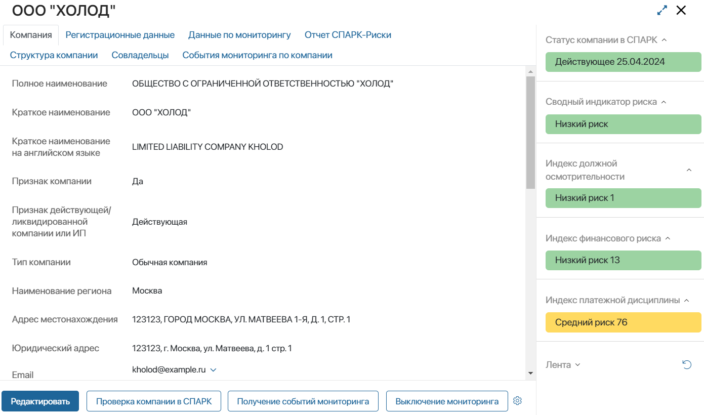
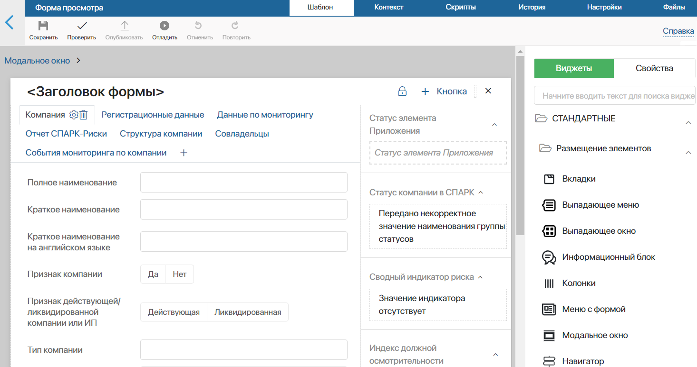
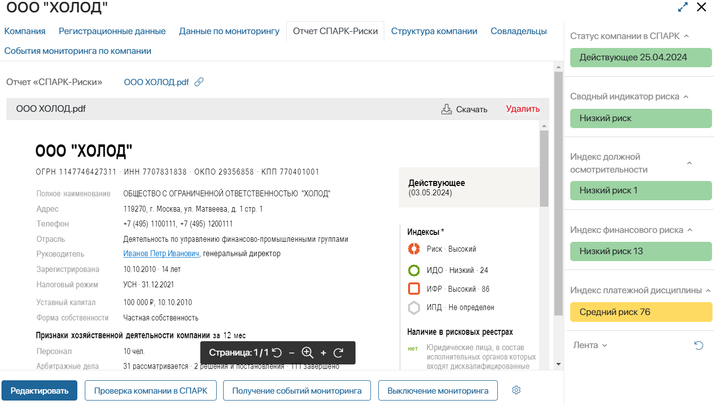
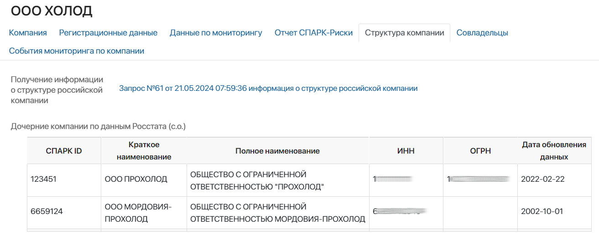
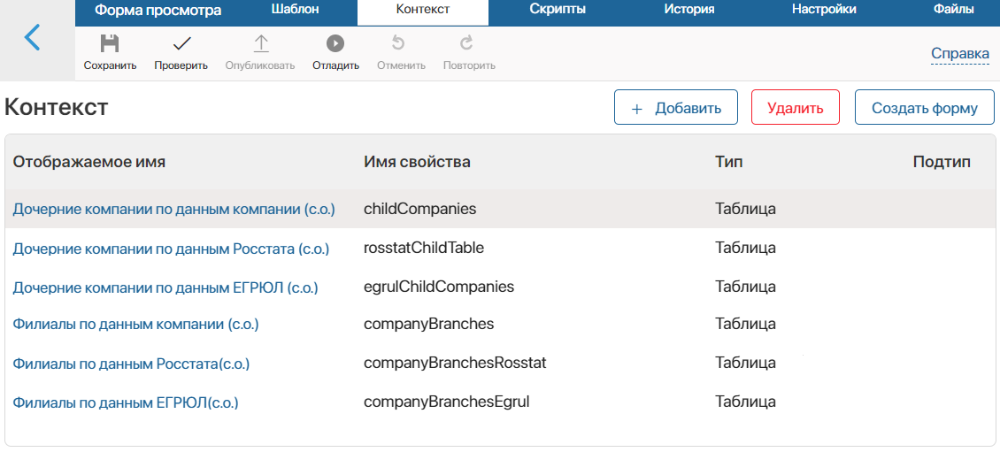

Используя бизнес-решение Интеграция СПАРК вы можете получать данные о компании: расширенную справку, её статус, отчёт о рисках, информацию об изменениях и т. д.
Решение включает раздел СПАРК, который позволяет пользователям запрашивать информацию через преднастроенные бизнес-процессы. Полученная информация отображается в карточках запросов в ELMA365.
Интеграция с СПАРК легко внедряется в другие разделы системы, чтобы сотрудники запрашивали нужную информацию из любого приложения. Для этого выполняются дополнительные настройки: моделируются пользовательские бизнес-процессы, изменяется форма приложения, с которым будут работать сотрудники.
Например, пользователи создают запись в приложении Компании и запускают процесс проверки контрагента в СПАРК. В результате загрузятся подробные данные о её реквизитах, структуре, актуальных совладельцах, отчёт о рисках, а также включится мониторинг изменений. Для получения списка изменений по компании и отключения мониторинга сотрудники запускают процессы с её карточки.
Данные из СПАРК отображаются в компании и сгруппированы на отдельных вкладках.

Рассмотрим необходимые настройки для использования решения таким образом.
Настройки пользовательских процессов с запросами в СПАРК
Чтобы пользователи могли запрашивать данные из СПАРК в приложении Компании, необходимо выполнить предварительные настройки:
- Создайте пользовательские бизнес-процессы на уровне приложения Компании и добавьте в них специальные блоки решения Интеграция СПАРК, например: Проверка компании в СПАРК, Получение событий мониторинга, Выключение мониторинга изменений.
- Чтобы в процессе запрашивать данные по определённой компании и загружать полученную информацию в приложение, необходимо настроить входные и выходные атрибуты используемого блока. Для этого добавьте в контекст приложения Компании переменные, совпадающие по типу данных и названию с этими атрибутами. Список переменных для настройки каждого блока описаны в статье «Входные и Выходные атрибуты блоков решения „Интеграция СПАРК“».
- Чтобы пользователи запускали настроенные процессы из элемента приложения Компании, добавьте кнопки в его карточки.
Настройка формы приложения
После моделирования процессов настройте форму приложения Компании, чтобы пользователи просматривали на ней результат выполнения запросов в СПАРК. Для удобства данные по каждому запросу группируются в карточке на отдельных вкладках. Для этого выполните следующие действия:
- Откройте форму просмотра приложения Компании в дизайнере интерфейсов.
- На вкладке Компания можно разместить основную информация о названии, адресах и контактных данных, полученную при запросе расширенной справки по контрагенту. Также можно добавить ссылку на созданный в ходе процесса элемент приложения Расширенная справка по российской компании. Для этого на правой панели дизайнера перейдите на вкладку Свойства. Перетащите необходимые переменные из контекста приложения на поле для моделирования.
- Создайте вкладки для отображения данных по другим запросам в сервис, например: Регистрационные данные, Данные по мониторингу, Отчет СПАРК-Риски, Структура компании, Совладельцы, События мониторинга по компании. Для этого на верхней панели поля для моделирования нажмите значок плюса и добавьте виджет Вкладки.

- На вкладке Регистрационные данные отобразите полный перечень реквизитов компании. Для этого с панели Свойства перетащите на вкладку переменные из контекста приложения, в которые записываются: ИНН, ОГРН, КПП и т. д. Информацию можно расположить компактно, например, добавив на форму виджет Колонки и разместив свойства в нём.
- На вкладку Данные по мониторингу добавлены ссылки на элементы приложений из раздела СПАРК, где хранятся запросы на включение и выключение отслеживания изменений по компании. Для этого в дизайнере интерфейсов с панели Свойства перетащите переменные типа Приложение, в которых указаны приложения Включение/Выключение мониторинга по компании.
- Файл отчёта СПАРК-Риски в формате .pdf запрашивается из сервиса. В карточке компании на вкладке Отчет СПАРК-Риски отобразим файл и добавим возможность просматривать его, не загружая на компьютер:

Перейдите на вкладку Отчет СПАРК-Риски. С панели Свойства перетащите на поле для моделирования переменную типа Файлы, в которую записывается файл отчёта. Разместите на форме виджет Просмотр файла. В его настройках укажите добавленную переменную с файлом отчёта.
- Запрос о филиалах и дочерних компаниях возвращает из СПАРК данные в виде сериализованного ответа, т. е. строкой. В карточке на вкладке Структура компании можно настроить табличное отображение информации о дочерних компаниях и филиалах:
Для этого:
- в дизайнере интерфейсов перейдите на вкладку Контекст и создайте свойства типа Таблица: для отображения дочерних компаний и филиалов по данным из родительской компании, Росстата и ЕГРЮЛ.

- В добавленных свойствах добавьте колонки таблицы для отображения: ID дочерней компании в СПАРК, её краткого и полного наименования, реквизитов и даты обновления данных в сервисе.
- Откройте вкладку Скрипт. Составьте скрипты для разбора строки с ответом из СПАРК, извлечения из неё данных и добавления их в настроенные таблицы. В нашем примере скрипт будет запускаться при открытии элемента приложения с помощью функции onInit.
Пример скрипта для заполнения таблицы дочерних компаний по данным Росстата:
async function onInit(): Promise<void> { |
- Информация об актуальных совладельцах компании поступает в ELMA365 как данные о структуре — в виде строчного сериализованного ответа. В нашем примере на вкладке Совладельцы показывается таблица с их именами. Для настройки выполняются такие же действия, как для вкладки Структура компании.
- На вкладке События мониторинга компании добавлена ссылка на элементы приложения Получение списка событий мониторинга по компании из раздела СПАРК. Для этого в дизайнере интерфейсов с панели Свойства перетащите на вкладку переменную типа Приложение, которая ссылается на соответствующее приложение.
В карточку компании можно добавить виджеты для наглядного отображения индексов риска и статуса контрагента. Показатели будут отображаться с цветовыми индикаторами, по которым легко понять благонадёжность компании.
Кроме того, на форме создания компании можно разместить виджет поиска контрагента в базе сервиса по одному из его реквизитов. Пользователи смогут заполнить одно значение, а остальные данные загрузятся из СПАРК.
Подробнее о виджетах читайте в статье «Виджеты решения „Интеграция СПАРК“ и их настройка».